Khodahafez, Lesvos
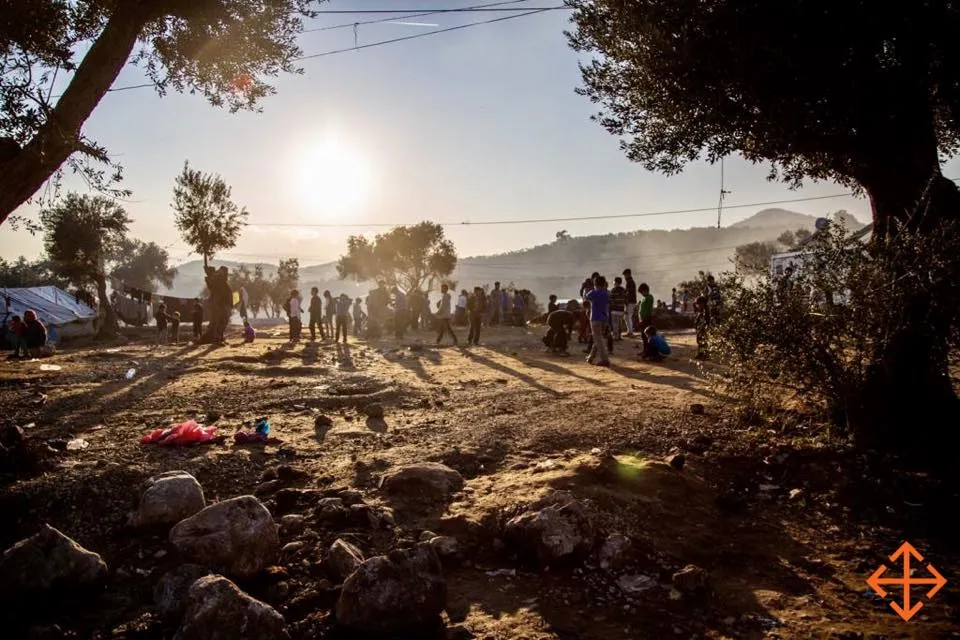
Photo by Movement on the Ground
You forget sometimes that this is still someone’s childhood.
Amidst everything happening in Lesvos — the fights, the fear, the uncertainty — there are also children flying kites, children minding their own business playing with marbles. Will they remember this when they grow up? Will they see the world through lenses of hope, or despair?
• • •
The situation in Lesvos is a tense one. Home to Europe’s largest refugee camp, Moria Camp, Lesvos has seen its landscape change dramatically since the refugee crisis of 2015. In just the last 2 years, the population of Moria Camp, a detention facility designed for 3,500 people, has shot up as high as 23,000. The detention facility itself is so crowded that people have spilled out into the surrounding olive groves, living in slum-like conditions, mostly with self-fashioned huts made of scrap material, or tents, keeping them dry.
From February to August this year, I volunteered with Movement on the Ground, a Dutch NGO that works towards building more dignified living spaces in these spill-over zones surrounding the detention centre. This is not a piece about the terrible conditions that exist and the failures of the European Union. Nor is this a piece about the injustices of this world and who it has let down. This is simply a reflection of my last half a year: what I have come to understand about people, and about service.
People
On Anger
The first thing that struck me when I arrived in Lesvos was the amount of anger directed towards refugees. “If anyone asks you what you are doing here, tell them you’re a student. Don’t wear anything organisation related outside of the camps.” I had known that there had been clashes between protesting refugees and police in the week before I arrived. I had also heard of the resentment amongst locals that would cause incidents on occasion. However, I had not considered that I was about to become a part of this equation too, that people trying to be of service were not always viewed this way — this was a rude awakening for me.
As February drew to a close, tensions soared. The Greek government announced its intention to build a new closed camp in the north of the island, and the people of Lesvos were having none of it. There was a range of responses. On the one hand, there were peaceful protests on the streets, which I accompanied my landlady to get an idea of. At the other extreme, violent clashes between protesters and the police ensued for days on end. These were ultimately successful and prevented another camp from being built. (Side note: as someone who had grown up in Singapore, it was remarkable to see a popular movement prevent a government from taking its chosen course of action — I had never seen that before) Also emerging was a far more cynical element — fascists. This group of people created roadblocks preventing supplies from reaching the camps, smashed the cars of aid workers, and as I would hear from a friend working along the north shore at the time, simply went out of their way to terrorise NGO volunteers. At one point we read about neo-Nazis flying across Europe to ‘get to the frontlines’ of this effort against a ‘foreign incursion’.
Mentally, I thought I was coping fine with all this noise in the background. I was wrong, I did have a tipping point.
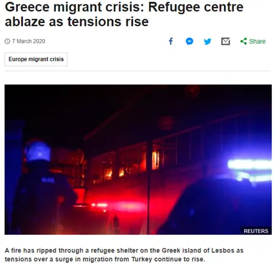
This was the school of a community centre where my old roommate had spent several months assisting as a medical professional. He used to describe how happy people were to be there and the life that it brought to people. That made it feel far closer to home. Upon reading of the arson, I phoned a friend and completely broke down.
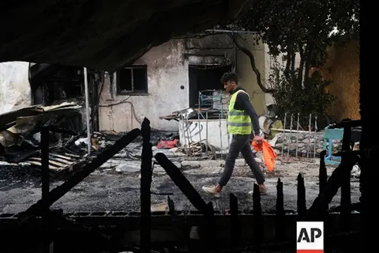
I could not understand the meaningless need to bully. I still can’t. One video that came out back in February that was particularly saddening was of a boat in Thermi (a nearby town from Moria Camp) carrying asylum seekers who had made their way from Turkey. The boat reached a harbour, but its passengers were not allowed to get off, instead they were met by an angry mob of people insulting them and shouting at them to leave.
As senseless as that scene seemed to be, I think it encapsulated the frustration that has softened me to the anger that keeps spilling over from time to time. The truth is, I have been told, that the people of Lesvos had been incredibly hospitable to refugees when the crisis began in 2015. Many continue to be extremely hospitable even now. But the situation has taken a toll on the local population in a way that is not always visible at first glance. Beyond the struggle that comes from a faltering tourism industry, the fear of a foreign population that may soon outnumber the largest city, the visual shock of seeing refugees everywhere in the streets, and the disturbances that occur because of this from time to time, there is also a great sense of being left behind by the rest of Greece, and perhaps to an even larger extent, the rest of Europe. As a recurring volunteer explained to me: ‘the people of Lesvos are tired’, and it is a tough ask to expect them to continue to be welcoming hosts with no end in sight.
A thought that I had seeing this unfold was while I believe that often right and wrong is clear, it is hard to say that within the wrong, anything is inexplicable. I think there is always room for empathy, and while that cannot justify bringing harm to others, it can go some way to bridging the divide.
In addition, incidents are never as simple as they are reported in the news. There was a period in February where my landlady disappeared for a few days, and I later discovered that she had joined the riots. She explained that she was fighting for human rights. That shocked me, because the general attitude of the protest was framed as a fight against making Lesvos bear the whole burden of the refugee inflow. This movement consisted of many different voices, but when they clumped together to make a lot of noise, only the biggest motive could be heard.
Another lesson I took away is to not generalise actors in incidents. Most occurrences of NGOs and the camps being targeted were probably only caused by a small group of fascists. To think that all locals were dangerous would seriously misrepresent them and leave one perpetually on edge. Often forgotten is that in fact, many people blamed by default end up suffering too. There was a point in May when I was working with two Greek contractors. At the end of a day one of my coordinators wanted to get a photo with them, but they shied away from it. They were afraid too, that if they were known to be working in the camp there could be consequences.
What upset me the most was not the intolerance and the anger that bubbled up and brought out the worst in people, but that every step of the way, someone would profit off the chaos. Local press rode on the ill sentiment and further stoked it by publishing stories such as that of aid workers preventing refugees from leaving the island to profit from the situation. In the city, shops profiteered off the confusion and rush to leave by continuing to sell ferry tickets to refugees without explaining the documentation required. This created chaos when many rushed to get on the boat, and many were forcefully turned away because they did not have the right papers. Most people were simply confused.
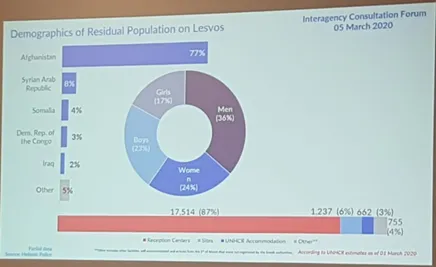
77% of the refugee population of Lesvos was Afghan (March 2020)
However, I think it is in the difficult moments that we see the best of people. I snuck into a UNHCR inter-agency at the beginning of March, and it filled me with extraordinary hope to see a myriad of agencies reporting their status with what had happened. There were so many people who clearly believed in their work and were overcoming unprecedented challenges to continue it to the best of their ability. Yes, some voices did let their anger known, but there was also an overwhelming understanding and forgiveness that you could feel from across the room. Maybe that is the character of the aid industry — the UN had a whole container burnt down; all they did was release a ‘strongly worded statement’ and move on with their work.
The very next week, a period of calm ensued. Coronavirus gripped Europe, and everything that there seemed to be angry about simply mattered less overnight.
On Survival
Most refugees I have met know some basic English phrases. Most common is “my friend”, followed closely behind by “big problem”. Put them together and you get a frequent response to a how are you: “Moria, big problem my friend”.
Moria Camp is a harrowing place. It is a problem that is not going to go away soon, in need of long-term solutions. However, politically, it is taboo to think of the camp as anything but a temporary fixture, and therefore the local municipality is reluctant to pour in the funds or grant approval for anything built to last. Any infrastructure investment signals that the Camp is here to stay, and while that may be the case, the municipality is not ready to concede that.
I retain a specific memory of reaching the camp and sleepily making my way off the bus, only to shudder awake as I walked past the shanty huts by the side of the road. I saw this every day, but it still hit me — people live here. It scared me just how numb I had become to people living like this, but this is the reality of the situation. Beyond substandard shelter, problems included an inconsistent water supply, a wait for food that could last several hours per meal. Worse, the camp was widely considered unsafe at night. Several isolated stabbings occurred over the period that I was there, but more frightening were the fights that would break out between different communities from time to time. I have emptied so many bottles of urine left behind in empty tents, many people simply do not feel it is safe enough to find a toilet at night.
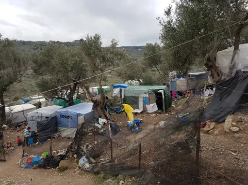
Constructions where people resided (Zone 7)
I had thought that with the shared challenges and common struggle, a cohesive and loving community would form. Why then, with what everyone had been through, were there still people who terrorised one another? How could you explain all the disagreements, cheating, stealing? My epiphany came when I realised that while assuming that everyone of a race is bad is racist, assuming that everyone of a race is good is racist too — it is asking too much.
Before arriving in Greece, I had read two kinds of write ups about refugees. One set of articles painted an image of refugees where they burdened society and would only bring more problems (crime, terrorism etc). On the flipside, I also read articles that advocated strongly for the good nature of refugees and how much they have to offer a community. My own inclinations meant I was more drawn to the latter narrative. I had an incredibly rosy idea of the kind of people I would meet. But both are incomplete. The truth is that a community of refugees is like any other group of people, and we cannot generalise their traits or characteristics, at all. Like any society, there exist well-intentioned, kind people, but there are also unpleasant people, and certainly room for unpleasant interactions.
It had not occurred to me going into this that I would be treated so rudely, that I would spend a considerable amount of time haggling with families about what I could and could not do for them, and that I would watch on as the organisation had windows smashed, tyres slashed and items stolen.
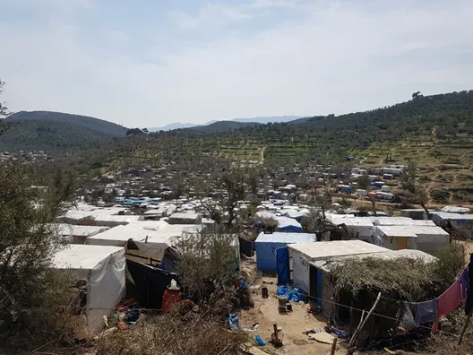
A snapshot of Zones 10–12
It takes a lot to have the forgiveness to want to serve this community wholeheartedly; and it is imperative that one is not serving this community because it consists of wonderful people. Very quickly, I learnt that some people are, and some people are not. It takes remembering that everything undesirable about a community still exists, and in these circumstances is even more pronounced. After having his new office windows destroyed after just one weekend, my coordinator, Kane, responded simply by remarking, “Well, that’s what happens when you cram 20,000 people into a space for 3,000.”
Everyone carries the baggage that comes with the journey of getting to Lesvos, combined with the lack of security that comes with living in Moria, many do not respond well. A friend from Cameroon tried to explain how the camp conditions changed people:
“People come here happy, with hope. But this place drives people crazy. That’s life.”
Hearing this, I grimaced. Because that’s not life, that is not what it is supposed to be. It did not surprise me that life in Moria had a deep impact on people, but it scared me how normalised this was.
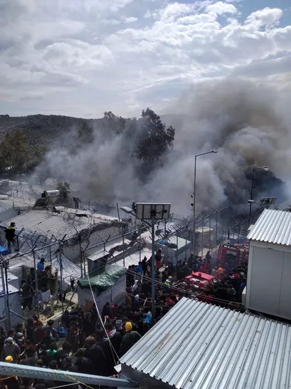
Someone far more experienced in this field offered me his perspective on this. He found that a lot of people he came across were in ‘survival mode’. This caused them to be on edge, to find security in gangs, to squeeze every drop out of everything. I felt this the most when I was involved in replacing the tents of families: some would only ask for more, and materials kept going missing (“Alibaba-ed” is the technical term here). It was exhausting to feel like I was a resource to be exploited. Looking back, I wished I had understood this earlier, and been more understanding when addressing families.
(This person was Rob, his wise words will reappear several times in this write up.)
When fights occurred, I was always disappointed — how could one expect a local community to be welcoming to refugees when they appeared to only be bringing the problems from home into Europe? If someone cited the violence within Moria Camp as a reason to be wary of refugees, I would understand where they were coming from. However, I would beg that person to also consider that every community is only responsive to the circumstances in which it finds itself. The same way that the hostility of the Lesvos community can be empathised with because of what they have had to put up with, so too can the residents of Moria Camp be empathised with because of the stress that living within it creates. Going one step further, there will also always be bad apples in a community, and it is important to not let them shade one’s impression of everyone.
On Meaning
Up to now I have referred to the people I have come across in broad strokes, but it is important to remember that every community is composed of individuals. Many of the individuals I met and worked alongside in Moria Camp were phenomenal people that inspired me each day.
A big difference between Movement on the Ground and many conventional models of the aid sector is that Movement relies significantly on the residents of the Camp. It does not see itself as an organization simply providing relief to people, but a group that is empowering the community and enabling them to make a difference to the Camp. Officially, this called the Camp to CampUS model.
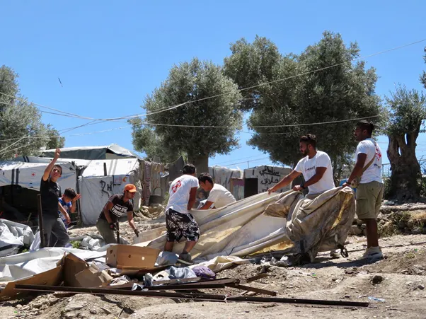
Resident Volunteers clearing vacant constructions to make way for the building work
Yes, it sounds terribly idealistic. But it really works.
The Resident Volunteer Programme takes in residents who are keen to be a part of the project and directs them to the various teams that serve the community.
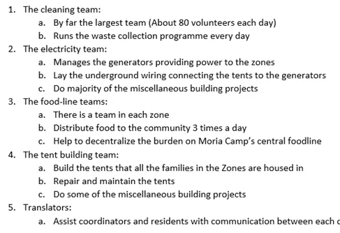
I can only imagine how risky this model must have been when Movement first started in the Olive Groves (Zones 6–9 of Moria Camp, east of the detention centre). How could you know what the buy in from the community would be, whether there would be any interest in supporting a group of Dutch aid workers who hoped to improve the living conditions? I do not have an answer to that, but back in February, when discussing how amazed I was with the willingness of the community to be a part of the project, the idea of ‘finding meaning’ came up.
Here we had people with their own stress and struggles every day, many do not even live within the Zones that Movement services, why did it make sense for them to contribute? Rob offered me this: having meaning in one’s life is a genuine human need. We all need a sense of purpose, and Movement was simply tapping into an unheard desire of residents to help one another.
A conversation with a Priest, Father Martin, who was working as a mental health professional in Moria Camp, offered another perspective. In his view, the biggest struggle facing adult refugees is boredom. The endless waiting for the asylum process, not being allowed to find work, means that many people have too little to do. This restlessness breeds the problems that Father Martin deals with each day.
I found a lot of meaning in serving the Olive Groves community through the projects that I was involved with. For most of my time that meant working with the tent building team, and towards the end I also got involved with the waste management programme. Yes, it was immensely rewarding to see the change in the landscape that the work produced, and to know that someone was benefitting from the efforts of the teams.
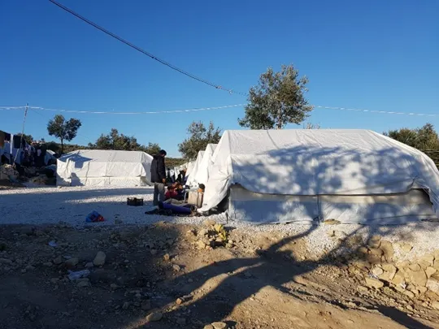
The result of a day of tent building
However, what also became incredibly rewarding for me was enabling the resident volunteers in my team to find meaning through our work. One of my proudest moments was when the guys in the tent building team disagreed with how I wanted to deal with the issue of leaky windows that was plaguing several tents in Zone 6. They just did not think that the families would take to my idea. I agreed, it was not the perfect solution, and I suggested that they propose an improvement. Splitting into two groups, they tried different techniques with the materials that we had, and ultimately Ismaeel and Milad stumbled upon a truly remarkable mechanism. I was so impressed, I got them to explain it themselves to the family in the tent, I really wanted them to own that solution.
Subsequently, following a survey of the tents in Zone 8, I sat down with the guys to discuss the problems that we needed to patch up, and again got them to propose how we should go about the repairs. We went through the types of problems one at a time and discussing each we came to a consensus about how to deal with each problem. Their input and buy in was invaluable to taking the right steps going forward and sharing ownership of the task. It took me a while, but on June 3, I recorded this in my notes: “The fun part is not serving people and doing things for them. It’s working with people. To enable them to do amazing things for their own community.” I found that one of the most meaningful things one can do is to help others find meaning too.
Through working with resident volunteers, I found that people generally have a desire to do more than serve themselves. One could argue that many were just filling the surplus time on their hands, but I think that that would have shown in the attitude that these volunteers took towards their work. From the cleaning team getting themselves dirty to keep the camp’s living spaces clean, to the tent building team making every effort to level a family’s space before laying the shipping pallet flooring of the tent, to the random volunteers that would stop to lend a hand shifting a family’s belongings from one zone to one of our tents, it was clear to me that people I met put their heart into their service.
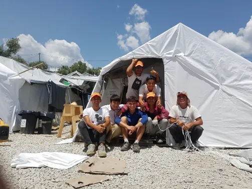
The tent building team after a project building porch areas in Zone 6
They say tough times don’t last; tough people do. But sometimes tough times do last. And sometimes they bring out the worst in people. Other times, tough times bring out the absolute best in individuals. I have been the most undeserving recipient of incredible generosity. I have also seen first-hand how much effort people are willing to pour into helping improve the lives of others, even if just by a little bit. I hold these close to my heart.
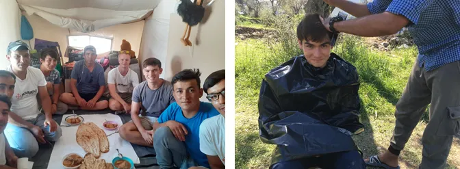
I have been the most undeserving recipient of incredible generosity
Service
Lessons from Movement
I feel incredibly fortunate to have been a part of an organization with such an ambitious mission, with coordinators I looked up to who trusted and guided me. Listed and expounded on here are some of the lessons that I picked up from the team along the way.
If you can’t sustain something, don’t start it
From time to time, the question came up as to why the organization was not doing more. I heard this question posed to my coordinators in various forms. One particularly tough instance was when residents in Zone 7 (where the infrastructure building has been halted by the municipality) asked why a food-line could not be started before the construction work was finished. I think an understated struggle of charity is knowing when to stop giving, and the rule of thumb I learnt from Movement was that if there was uncertainty about whether it could be followed through, then it should not be started.
This uncertainty extended of course to the capacity of the team, but also to the buy-in that was expected from the community. There have been a several ideas that I have wanted to trial, and the initial stumbling block is always if the people these are designed for will use these as they are designed? I do tend to take an idea and run with it, and it was important to remember that what made a lot of sense to me as an individual did not necessarily gel with the target audience or fit the context. Whether the community would sustain it was an equally, if not more, important question when it came to new projects.
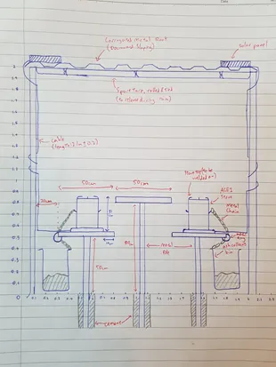
e.g. Communal cooking stations: leaving solar panels and portable stoves in the open — this was not going to last a night before they were ‘alibaba-ed’
Learn the language
English speakers are terrible. I feel for foreigners learning English. Instead of encouraging non-native speakers, we often look down on them, expecting everyone to speak proper English by default.
In contrast, as I attempted to learn Farsi, I found that everyone I met was nothing but touched to see me making the effort to learn their language. I think this probably helped me the most in connecting with residents. Eventually, I reached a point where I could communicate in very context-specific settings and got more and more brazen talking to residents without a translator (though sometimes this did not work out at all). Nonetheless, it was not my actual command of the language that helped me connect with people (my conversational Farsi still has a long way to go); rather, I think it was simply trying that helped me to build relationships with the residents I met.
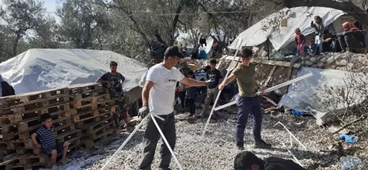
Friends like Raouf kept adding to my Farsi dictionary with strange chicken insults
On a more humorous note, my Farsi probably also improved because I had so many people turn to me and ask ‘Tajiman?’ (meaning translator). My appearance caused many residents to assume that I was Afghan, and that gave me a lot of opportunity to practice my Farsi! (Initially my standard response was: Man farsi sobhat namikonam — I do not speak Farsi. Eventually I felt like I had earned the right to say: Man farsi sobhat kam kam — I speak a little Farsi)
“People in Amsterdam only see the drone pictures” (Seeing the bigger picture)
When I was tasked to take on the tent building role, part of the role meant directing where we would place the tents exactly. That meant weighing up a few things. Is there sufficient walkway space? Are they aligned nicely? Can we fit more in here? Is this a fair distribution of the space? In each scenario a permutation of these factors would determine how we set up the tents.
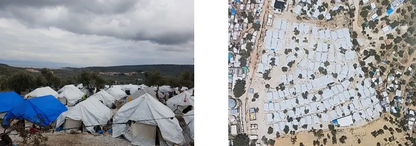
L: A cluster of tents R: Aerial photograph
There was one day when my technical coordinator, Herman, was disappointed to see that one of the tents was half a metre out of line with another, and I explained it was to create more space elsewhere. He understood what I meant, but explained, “People in Amsterdam only see the drone pictures, it might make sense here but if you take a satellite photo it looks like we don’t know what we are doing”. My initial response was to find that explanation trivial. However, on reflection, I recalled that the NGO is indeed wholly reliant on donations to keep its operation running, and this kind of compromise will probably pay off going forward, even if it looked illogical on the ground.
Another similar instance with the tents cropped up when we arrived at the final row of tents to complete Zone 8. As it turned out, we had burst the estimate of how many we could fit significantly, and while that was a good thing, it also meant that the planning for what the generator would have to support was well off the mark. In the end, this last row was more spaced out than the rest and recognising this other aspect of the project a bit earlier might have allowed for a more reasonable distribution of space.
Being involved with repairing the tents in Zone 6 while also being involved with replacing old tents in Zones 8 and 9 gave me a good overview of the materials that the tent building team were frequently discarding, while also being aware of the needs in Zone 6. One problem that the tents in Zone 6 (which were of a different model and significantly older) had was that of a sinking roof. Different tents experienced this problem to varying degrees, but in the most extreme cases it meant that residents could never stand up straight in their own tent.
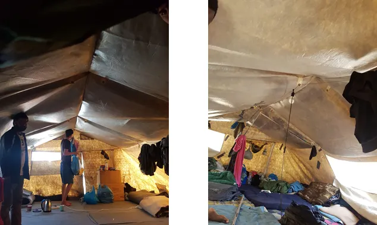
Tents in Zone 6 with the ‘sinking roof’ issue
I found that by salvaging the tent frames that were about to be discarded from Zones 8 and 9, then cutting them down to size, you could install them in Zone 6 and make the tents much more comfortable to live in. Zone 6 houses mainly groups of single men, and the reaction of some of the guys when we installed them was priceless. It was a simple solution, but I was only able to do this because I was involved on both sides of the Olive Grove and realised the potential in the hundreds of ready-made tent frames we were about to acquire. It was only when I got the tent building team to help me with this project too that they understood why we were spending so much energy saving and storing what would otherwise be scrap material. This made me wonder how much is in fact wasted in big non-profits because organisations lack the ability to recognise that what is waste somewhere is useful elsewhere.
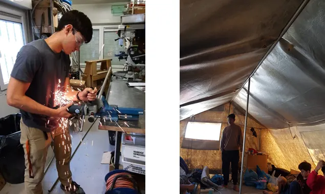
L: Cutting the poles down to size R: A tent with the poles installed
Creating a sustainable ecosystem also means respecting your host
Movement puts a lot of effort not only into serving their beneficiaries, but also creating positive outcomes for the local Greek community. The thinking is that for something to last, it must be beneficial to all parties, otherwise over time it will fall apart. For this reason, Zones 6 to 9 are the only zones outside of the actual facility that the landowner is compensated for the land. This also gives Movement the authority to act as the ‘landowner’ when it operates in these Zones.
In addition, Movement takes every opportunity to serve the local community too. Sometimes this is in the form of cleaning up messes that the refugee camps have created for the locals (such as the river carrying waste to Moria town), but other times this is simply through activities such as beach clean ups and football classes — anything to improve relationships with the local community.
At times I was a bit miffed by the effort that went into trying to win over people who were not our beneficiaries. However, taking a step back and recognising the tightrope situation that we find ourselves in, it does make a good deal of sense to have the local community not opposed to our work. In addition, the impact of the refugee crisis goes beyond refugees, and there probably should be more actors making an effort to support the local community in what is a trying time for them too.
The value of order and justice
I did not expect fairness to matter as much as it did in a refugee camp.
One of the first things I learnt on Day 1 in the Olive Grove was to say no. Repeatedly as I was taught the ropes of the tent building process, there were people coming up to Robin, the person handing over the role to me, asking him for bits of material. Some we needed, some we did not. However, the answer was almost always the same. No.
The logic was that if we wanted to provide anything, we had to be able to provide that for everyone. The foreseeable consequences of distributing the items we no longer needed included attracting crowds every time we worked by creating an expectation. And where there is a crowd and limited things to go around, there is often conflict. The safest thing to do was to hold onto things, and if things needed disposal, to dispose of them off-site.
Yes, it was disheartening to turn away people just looking for bits of tarp. However, what I learnt along the way was that if you want to give away things that would be otherwise discarded, there is a time and place for it. It cannot disrupt the sense of justice in a community.
It took me a while to appreciate just how important keeping the community peaceful and avoiding conflict is. Over time, I realised how fragile this peace can be and began to understand why it was maintained at all costs.
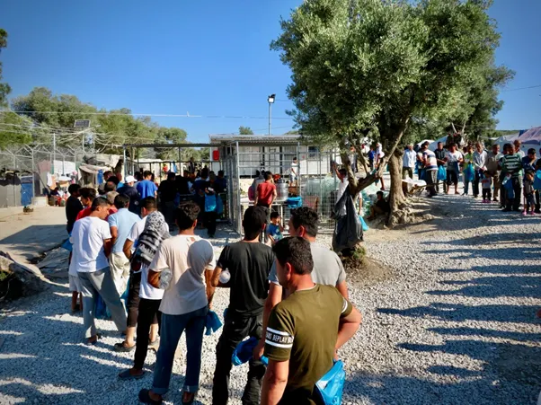
The foodlines rely on trust between community and organisation to function
Thinking a few steps further, to be effective, Movement needs to maintain authority in the community, and to do so it must show itself to be in control of the situation while also providing an outlet for people to feel heard. Maintaining order and a sense of justice is imperative to this goal. Otherwise, if Movement loses its legitimacy in the Olive Groves, the fear is that gangs will gain a foothold in the zones, as they do elsewhere in Moria. Movement must be seen as a strong authority to avoid this outcome.
Fill a gap
One of the biggest lessons I learnt from watching Movement operate is to fill the gaps that others need filling. When I hear about how Zone 6 started as an area to house single men, I recognise that Movement first identified a big oversight, and that they could make things better. They were doing what other bigger actors did not have the capacity to deal with. In this sense, being a small NGO and creating an operating procedure from scratch was probably an advantage. They could target the specific areas that they wanted to improve and were committed to that goal.
By filling a gap in a way that is aligned to bigger actors and benefitting them by decentralising some of the problems, Movement puts itself in a position to receive help from these actors too. For example, all of Movement’s tents are donated from International Rescue Committee (IRC), who get them donated from elsewhere. All the generators that Movement runs in its Zones are also donated by IRC, and the fuel for them is brought by the municipality. In return, Movement ensures that there are no illegal wires hooked up to the Camp’s main power supply running into its zones. The food that is distributed in Movement’s zones is provided by the catering company that is hired by the municipality. By distributing in their zones, Movement is relieving pressure from the main foodline within Moria Camp. The wash areas and toilets within the zones are also donated other actors and maintained by Watershed.
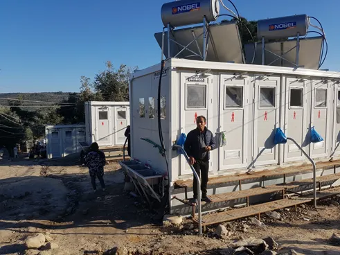
The wash facilities in Zone 8
What does Movement provide then? Besides renting the land and altering the landscape, Movement is mostly offering the manpower to manage the community and to engage it to keep essential operations running. I found this model smart because it recognises that other actors want the same outcomes, and by collaborating, leveraging on the funds of other actors, Movement is able to help accelerate the process of creating a more dignified living space in the Olive Groves.
The morality of service
Nobility
Aid work has always been something that has appealed to me. When I was in school, my dream was to run a mobile think tank that would create development strategies for impoverished regions. I see now how many pitfalls that runs the risk of falling into (white saviour et cetera), but I think that at its heart is a desire to create better livelihoods for others.
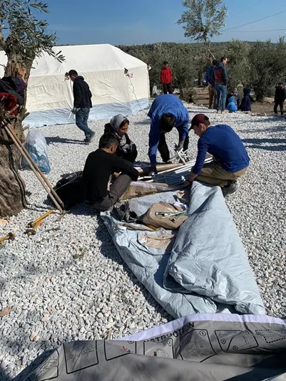
Tent building in Zone 8
However, this desire to ‘help people’ was one that often got mixed with the notion of nobility. It is confusing. You want to serve people, but at the same time you don’t want to turn people into mechanisms by which you make a living. You don’t want to be the crisis relief operator excited for the next disaster. Hence, in my mind, service had to be something that was completely noble — you had to give something up, you had to be self-sufficient, how can you be compensated for this work? This desire to ‘gain nothing’ led me to think that I had to be obsessively secret about whatever I was doing. While most of these issues were not directly relevant to me, this was the frame of mind that I left home with.
A day before leaving, I had conversation with a friend of mine, Noah. I shared these concerns and what he said has stuck in my mind ever since.
“Yeah, but… it will never be noble enough.”
He explained, when you seek nobility and you desire to be selfless for the sake of being honourable, are you not being self-serving in your intentions? I was taken aback, and as I boarded my flight the next day, I never could have imagined how many times those words would come back to me, taking on new meaning each time.
It’s not what you do, it’s how you do it
I recently considered how there are so many uncertain routes that the lives of my friends from Moria could take — from being stuck in the system, to being deported, to making it into Europe. When I thought about my friends back home, I had this thought: Worst case scenario, someone goes on to lead an unmeaningful life. I realised that to me, finding meaning is probably what I think life is really about.
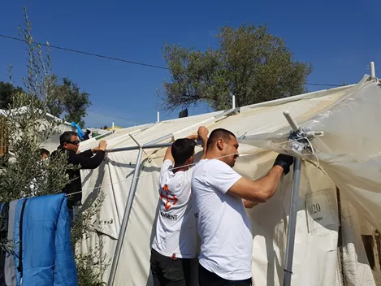
The tent building team replacing the tarps of older tents
When I think about my attraction to aid work, I think to some extent, imagining a future spent ‘helping people’ certainly provided the blanket assurance of being ‘meaningful’. On hindsight, while it might place one somewhere where there is immense opportunity to create meaning, it is far from automatic.
What I found instead, was that there were so many days when I got home from the camp and felt worse about myself. There were days when laziness dissuaded me from assessing a family’s problem, days when I responded to disrespect in kind, days when I got the whole team wet working in the rain — forgetting that I was the only one with a hot shower to return to.
Just giving up my time to be in Lesvos certainly did not make me a good person. If my goal was to find meaning, then it was my every interaction that mattered.
As I watched the different actors who contributed to the running of the camps (Moria and Kara Tepe), I became distrustful of people who shouted at refugees and treated them poorly. There is a lot more to doing good than being in certain positions.
Who are you helping for?
I think a common struggle that every travelling volunteer can probably attest to is restlessness. There is always a desire to do more, to be constantly working, to be a greater blessing. However, a pitfall sometimes is that while we are striving to be useful, we are first satisfying our own desires to fit an image of what we want to be, and then serving others second.
I fell into this trap plenty of times. I recognised that sometimes some of the ideas I wanted to trial became more about giving me a sense of accomplishment than benefitting others. When we kept out of the camps for two weeks because the COVID situation left everything uncertain, I struggled. Looking back, being there and ‘contributing’ was not worth the risk that I could bring the disease from the city into the camp, but at the time I still felt miserable not being able to do anything, even though that was the best thing I could do for everyone else.
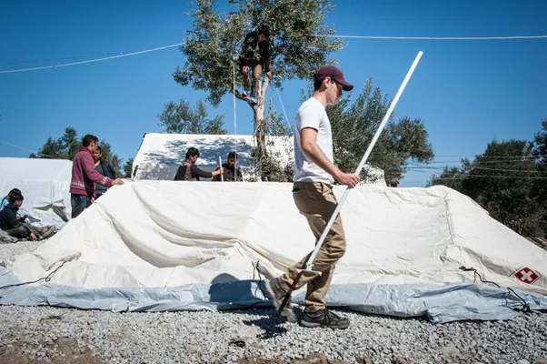
Tent building in Zone 8
I recall how in February, a volunteer queried about starting an English class for residents since there was time to spare. On the surface, there was nothing wrong with the idea. But when it became about ‘doing something’ because we want to, and when there was not thought about what would actually matter to the beneficiaries (whether it could be sustained over time, whether there was real demand), the idea simply had its heart in the wrong place. It failed to weigh up if it would genuinely benefit residents in the long term and ran the risk of just leaving people disappointed.
Part of this is about where we find our identity. When we place it in things like being productive and achieving goals, or when we want to tell others of all that we've been doing, and those become paramount, then service of others takes a backseat. That takes a lot of self-awareness and examining myself was something I kept having to do as I slipped into these traps over and over again.
This is a lesson that was spelled out very directly to me by Henri Nouwen. He writes in his book ‘Spiritual Direction’ about his time serving at L’Arche Daybreak, where he learnt that service was not about doing and doing and doing to prove his worth. Rather, he found that just being and journeying together with those he served, forming community — that was most important.
So, if there are so many pitfalls, how should I go about doing good?
I think two of my greatest takeaways enabled everything else to fall in place, they were the following:
1. Examine your own intentions first
Prior to this year, I had never journaled before. I always had this warped idea that I'd missed the best years already and it was too late to start now. What I had never considered was that journaling helps more as a tool for the present than a record for the future. It allowed me to understand where I was at and articulate precisely what did not sit right with me. Journaling was useful because it allowed me to be critical of myself and really know when my heart was not in the right place.
I think we all have our demons. Even embarking on this journey and sharing that with my friends, there was a nagging voice begging the question if I needed others to validate how special I was. This desire to be validated by others is indeed a huge flaw of mine. But let me be clear. I do not think that that should have stopped me from leaving. Choosing to spend those 6 months the way I did was one of the best decisions I ever made. So, if this cognizance did not change my actions, then why does being aware of motive matter? Because just by articulating and being aware of the other intents that I might have had, I could then keep them in check.
This goes for everything. Not being aware of why we do things is dangerous, and it allows what should be pure actions to become conduits for something more sinister. The utilitarian belief that only the end-result matters is certainly appealing — it is just so straightforward. However, while on societal level that might work, I do think that as individuals striving to be good people, one’s state of heart cannot be ignored. Self-awareness does not have to change the behaviour, but it should change where it stems from.
2. Treat people as ends and not means
The second big takeaway has become something of a framework for me when I consider acts of service.
Emphasis can be drawn to two distinct things here.
The start of the imperative, ‘treat people as ends’, is something I take as a mandate and a reason in one. We should strive to serve one another for the sake of it. Just being a person should be enough reason for one to receive love, empathy, and dignity.
The second portion, ‘and not means’, draws a line between what it means to be the end objective, or a pawn in another goal. If working at a soup kitchen is something I do for my own ego, I turn every beneficiary into tools that make me feel good about myself.
This goes beyond service, and I think it is worth asking this of the friendships we foster too. It is not easy to answer definitively that our relationships are 100% one way or the other, but I think that deep down we all know which way our heart leans, and I think self-awareness is everything.
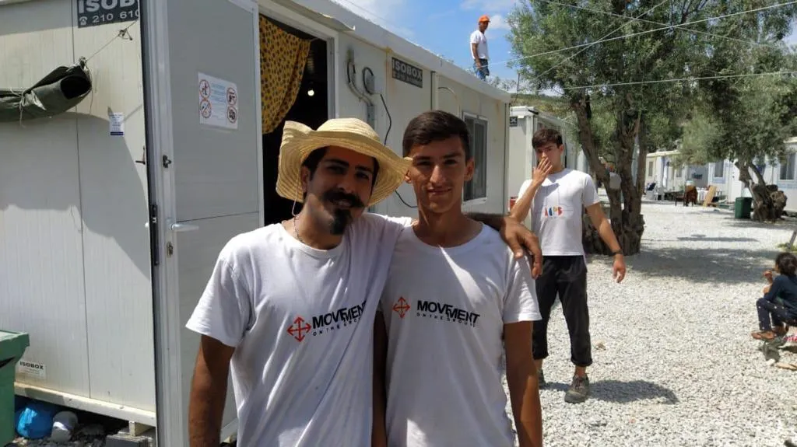
Working on the shading project in Kara Tepe
When I became aware of this, I realised that I had been treating residents artificially nicely. If I really treated them like people equal to me, then I would not need to be sorry to say no when I could not give away things. But if I was apologetic when I had every right to be firm, then I was treating adults like kids, and certainly not as equals. My flatmate Simon framed this perfectly, “they are people too”, and when you respect people as adults, they respond in kind. Peeling back another layer, perhaps I was really trying to feel ‘liked’. This quest for gratitude and fear of being despised was me treating residents as means of validation, not ends.
When you treat people as ends, you love them because you want them to be loved. That does not mean necessarily being nice to them, but simply doing what you can for them. It can mean being blunt, it can also mean disappointing them. Importantly, it means that whatever response you receive does not matter, your help cannot be gratitude dependent. When you treat people as ends, you serve for service’s sake.
Back in April, there was a period when I felt really frustrated in my role. I was so tired of being treated me poorly by residents. In that exasperation this came to me (as I am re-reading this I am literally in tears; I was so ready to leave — I will forever be indebted to Julie for journeying through this period with me):
Believing that everyone of a race is bad is racist. But believing that everyone of a race is good is racist too. There will be good and there will be bad.
To serve people is to recognise that not everyone is gonna be appreciative and act as YOU want them to. To serve is to know that people will be ungrateful. People will be rude. People will take you for granted and will take advantage of you.
But to serve is to be ok with that.
To know that true love is not the love that you share with your neighbour — it is the love you share with the man who will not only never pay you back, but will also shout at you, steal from you, and treat you not as a person but as a vending machine that needs to be rattled to dispense things.
To serve is to love without expecting to be gratified.
To know that as you strive to be a blessing, you will be hurt.
And to know that with the same nurture and nature, you would be no different. That you won the lottery of birth, and in the reverse, you would act the same. You would hurt yourself.
Strip everything bare, we are all the same.
No “tash-a-koor” will keep you going when you only serve to hear those words. No smile, no pristine new tents, no happy families will be enough. Because the next argument you have with the man telling you in angry Arabic that he needs one more pallet erases all of that in a heartbeat. When you serve to feel good about yourself — you will eventually feel pretty bad. It will never be noble enough.
So why should you serve?
Because it's the right thing to do. Because you want people to be better off. Because blessing others is a blessing in itself.
It's not about you.
The novelty will run dry. You will learn less each day as the months go by. But that's when you're best able to make an impact.
And no one needs to know.
If you're not ready to leave and you don't — so what?
But if you're ready to leave and you stay.
The moral quagmire of refugee work
The humanitarian issue vs. the political issue
The refugee crisis is not just about whether to grant people asylum or not. That question certainly draws the most attention, but being involved in the crisis goes beyond this political question. Another facet to remember is that with a lengthy asylum process, what follows naturally is a housing problem. And where there is a shortfall in housing capacity, there is a humanitarian issue.
I personally do not have strong opinions on the political issue. I believe that there needs to be a fair and objective mechanism to make decisions about asylum seekers, but I lack the knowledge to have an informed opinion about what that should entail.
However, I do feel strongly about the crisis because whatever the outcome of the one’s asylum process, one still ought to be living in dignified conditions in the interim. I have heard the argument that “people choose this”, but I do not think that that is sufficient reason to justify the inertia towards improving living standards in the camp. A hole you dig yourself into is still a hole. It is inhumane to argue also that the poor conditions are a deterrent for new arrivals. Just because someone is willing to brave the struggle of Lesvos to leave a troubled life behind is not reason to justify the state of the camp.
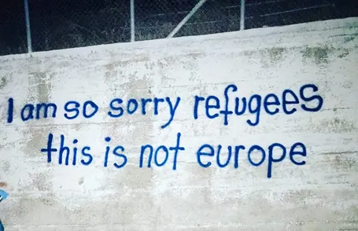
Graffiti across a wall in Moria Camp
Sure, but at what cost?
One aspect of NGO work in this sector that I did not understand initially was sea rescue. I felt that deploying boats to rescue refugees attempting to smuggle themselves across the border in unsafe dinghies encouraged this practice and incentivised smugglers to not worry about the safety of these boats.
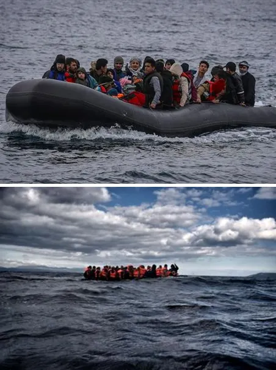
Every dinghy is automatically considered an emergency, Photos by Aris Messinis (Coincidentally, I met him when I confronted him for taking photos in our Zones)
Dinghies would be packed with people, made of cheap material, and lacking any experienced driver. Engines failing at sea was not uncommon, and it was well-known that the life jackets provided were often fake — made of a cheap material that would absorb water. Every dinghy is automatically considered an emergency, no matter its state of distress. They are always overcrowded, not designed for these journeys, and just attempting it is unsafe. Smugglers are never actually on these boats, and thus they have no skin in the game. Their responsibility stops once the boat is on its way.
I raised this point with Rob at dinner one night. If there are rescue boats picking up people in the sea, is that not encouraging people to make poor decisions and giving smugglers more reason to continue their unsafe practices? Shouldn’t we try to disincentivise this?
His response was frank.
“Sure, but at what cost? 20,000 people have died there, it is the deadliest strait in the world.”
At what cost.
These words left a deep impression on me. When you treat people as ends, then their life comes first, and the debate ends there. If you start thinking about them as means to create incentive structures and communicate a national policy, then you are turning a blind eye to their lives being at stake, and you are not valuing human life as the highest priority.
The next step
On the way back to Singapore, I found myself stuck in Athens for two days because I needed a COVID test to transit through Dubai. I took the opportunity to sightsee a little, along the way I came across several refugees and learnt more about what was beyond Moria Camp.
One person I met was someone I had known from Kara Tepe. There, he trained others to work in the ‘Barber Shop’ that Because We Carry ran. I met him by chance outside a barber shop where he had found a job. He told me that his family had received their asylum to live in Greece. He had come to Athens to find an apartment for his family, who were still waiting for him in Lesvos. While he was fortunate to find a job so quickly, he struggled to find an affordable apartment for his family. In the meantime, he was living with friends.
More heartbreakingly, I came across plenty of families at Victoria Square who were just aimlessly sitting around the park. I had heard that many refugees end up there when they choose to leave Moria Camp with the correct papers, but without having waited for a transfer to bring them to another camp. With my limited Farsi, I attempted to ask a few people what the situation was here. “Khona — neest, money — neest, inja nazdiq dafter, train” — they had no money and they had nowhere to go; Victoria Square was just convenient as it was near the relevant offices and the train from the port. I figured that there was probably also some security in numbers. It seemed crazy that these people had taken this leap of faith and hoped to be transferred to another camp just by showing up. But then again, they had taken many leaps of faith just to get to this point. At one point, a boy translated to a police officer for his family, requesting if everyone could be brought to another refugee camp. The police were completely ill equipped to be answering him, and I shuddered to think that after all this time, there did not seem to be a system in place to respond to what must have been a frequent occurrence.
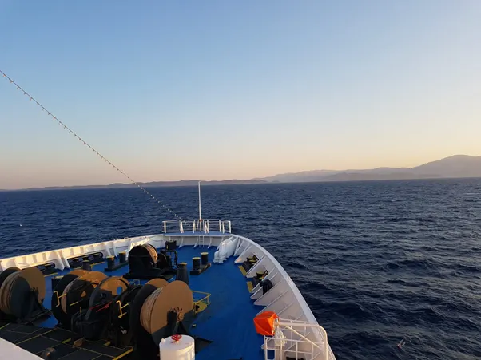
The ferry to Athens
I had seen some of the struggles that came with attempting to reach Europe, but in Athens I was reminded of why this was worth that struggle. On my last night, I stopped for dinner at a falafel place. As I was ordering, I picked up a few Farsi words (daram — I have) coming from inside the shop and so in my broken Farsi, I struck up a conversation with the shop keepers. They had come from Iran and been here more than 5 years already. They were an example of people who had arrived and carved a new life for themselves. It was nice to see what the light at the end of the tunnel was when for so long I had only journeyed with people in the darkness.
Thanksgiving
Before I left for Greece, I confided in a former teacher of mine, Mr Chirnside, about some of the anxiety that I had in embarking on this journey. He asked me a simple question: “Have you prayed about it?”
I was almost embarrassed to concede that I had barely done so, and he instructed me to do two things. First, to read Acts, and to witness how God provided for the Apostles in their journey. Second, to come up with a list of prayer pointers, so that I could “watch God check every box, every fear and anxiety, off the list”.
Sure enough, reading that list now, every single box has been ticked. God took my hand and led me through every obstacle. Now I am back home, and I recognise that I have been taught so much, I have forged meaningful relationships, I have been looked after every step of the way.
Thank you, God, for everyone back home who has supported me on this journey. Thank you for my parents who have trusted me to figure things out, but also checked up on me unceasingly. It was tense when Mum and I were at odds about me staying so long, and I weighed up leaving straight for the UK, but I am immensely grateful to have a family that wants me home — thank you Lord. Thank you for the friends who have been sources of strength for me, who have heard every fear over the phone and have given me perspective.
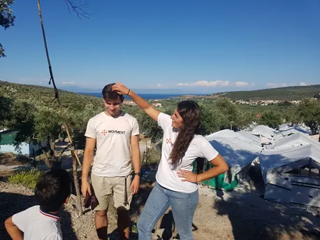
This kid was not impressed to see that I needed Julie to fix my hair for a photo
Thank you for the people that I have met. From start to finish, I was blessed to be surrounded by some of the most inspiring people I have ever come across. Thank you for Jordan, who made me feel at home straight away. Robin and Bas, who showed me the ropes in a lot of regards. Thank you for Herman and Rob, two people who taught me so much about what service is about. Thank you for Takis, the most hyper old man I know, who never failed to show his appreciation. Thank you for Kane, Tawab, Anne Sophie, Maria, Ali, Fabienne, and all the coordinators, who trusted me and helped me to learn through the decisions they made. Thank you for Marie, Jose, and Marcus, people who showed me what living one’s life in service could look like, and that you are never too old to contribute. Thank you for Noah, Simon, and Tigs, people I thought would cause me to lose my mind, but instead who changed some of my perspectives on life and who I treasured every minute with. Thank you for Silke, who always saw things as they were and looked out for me along the way. Thank you for Eline, who listened to my every qualm and was there for me in my most anxious moments. And thank you for Julie, who I spent every day working with for the first 4 months. She became a big sister to me, and I cannot put in words how much I loved working with her. Thank you for all tent builders — Esmatullah, Golwali, Haji Reza, Raouf, Taher, Aref, Morteza, Ismaeel, Milad, Reza, Hosein, Qamar, Hamid. Thank you for the relationships that we forged and the sheer hours we spent alongside each other. These guys have a special place in my heart. Thank you for all the other resident volunteers I got the chance to work with and who inspired me with their attitude to life — Farhad, Fatima, Shariff, Reza, Muhammad, Abdul Kadir, Romal, Hussein, Sohrab, and the countless others whose names I did not manage to learn, but who helped me and greeted me with so much joy each day.
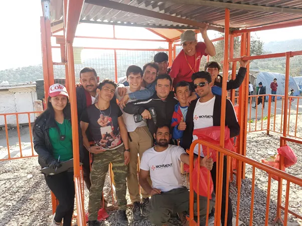
Thank you, God, for the lessons you taught me, the responsibility I was entrusted with, the opportunity to make a difference to your people in a very direct manner. Thank you for allowing me to have my voice heard and to see some of my ideas go from just that to reality.
Thank you for forcing me to reconsider my perspective on things, to continuously have my beliefs uprooted and critiqued, and for giving me the chance to see the world in new light, over and over again. Thank you for the voices of wisdom around me that have moulded me and inched me in the right direction.
Thank you for leaving me with more questions than answers. I have a lot to figure out now — how do I want to lead my life? And while it scares me to feel an added responsibility when answering this question, I think it is so much better to answer it with my eyes open than my eyes closed. May you lead me Lord, pull my heart to where you want me to serve you, and may I spend my days holding your hand as I walk through the darkness.
Afterthoughts
In March, with the impending fear of coronavirus engulfing Europe, all my flatmates left and there was real risk of not being able to get home if I stayed. I hiked up my favourite hill, and as I watched the sky and heard the dogs barking in the distance, I felt an overwhelming peace and the conviction to ignore the ‘noise’ and stay. What followed certainly included seasons of immense loneliness, uncertainty, and frustration. However, each tough moment had its learning point, and they all paled in comparison to the friends, the joy, the independence, the road trips, the problem solving, the Farsi-learning, the emotion, the growth. I am unspeakably grateful for the last 6 months, and for God guiding me each step of the way.
More than two weeks have passed since I left Lesvos. I cannot help but pinch myself sometimes and remember that the last six months were real. Thinking about it now, it feels so distant and far away — that scares me. It scares me that if I forget about it, then it all disappears. Everything I saw, everyone I met, the pain, the struggle the circumstances — they are all real, and they persist. It pains me to know that I can walk away from it anytime, but the friends I have made cannot.
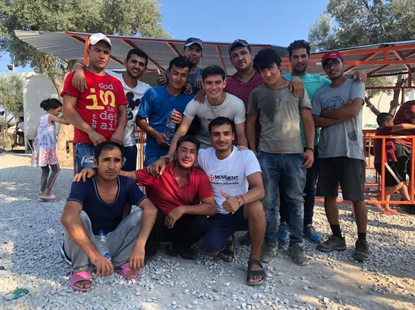
But knowing what is there, I am also not sure I am ready to walk away and live my life as I would otherwise. It is early days still, but I feel as though at the back of my head, I will always remember that somewhere that struggle is real. And I know that somewhere within me I will want to contribute.
“Life is just a little opportunity to say to God: ‘I love you too’” (Henri Nouwen). I pray that God leads me to where I can be of service.
• • •
You forget sometimes that this is still someone’s childhood.
One day as I was walking, my legs got caught in the string of a little boy’s kite. Before I knew it, I had snapped the string. The boy looked as though he was about to cry, and while I was hoping to head home quickly, I could not help but squat down to talk to the boy. Slightly bemused, I picked up the two ends where the string had snapped, and trying to teach the boy as I went, looped them in a circle and pulled both ends through, securing one side to the other once more. Instantly, his face broke into a smile, and I went home happy.
This boy’s string is going to break many times, I hope he knows how to put it back together again.